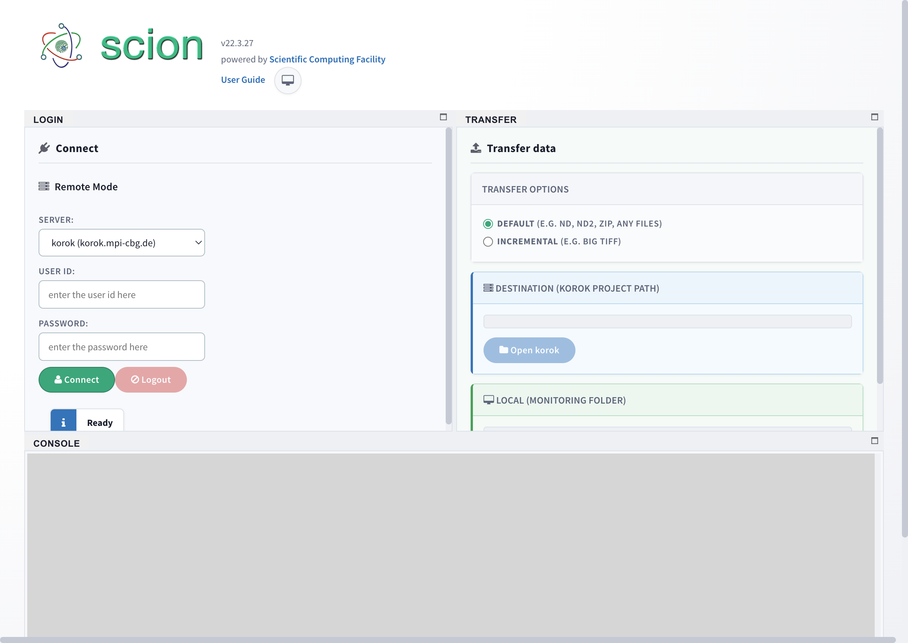
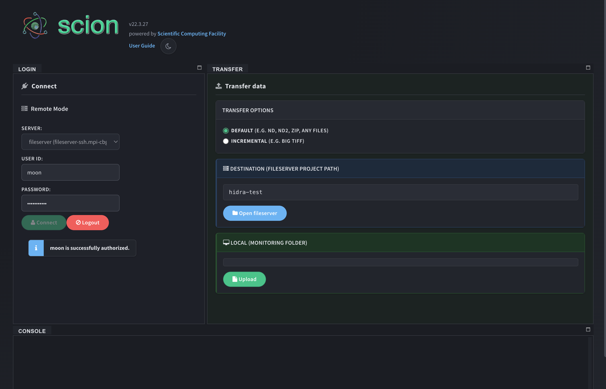

Reliable, real-time file synchronization for research facilities
Microscopy instruments generate large datasets that need to reach project storage reliably and automatically.
Common pain points:
Scion solves this with a desktop app that:


Under the hood:
--partial for resume, --append-verify for incremental large files-pid) reliably terminates rsync and all childrenVue 3 Composition API with TypeScript. LandingPage.vue orchestrates 11 composables:
| Composable | Role |
|---|---|
| useAuth | LDAP login, connection state |
| useRsync | Process state, stop transfer |
| useDatabase | SQLite transaction tracking |
| useFileWatcher | Chokidar file monitoring |
| useTransfer | Transfer orchestration |
| useLayout | GoldenLayout + xterm |
| useTheme | Dark/light/system toggle |
| useAppState | Electron-store persistence |
+ useRemoteFolders, useServer, useNetworkDrive
Tech Stack
Features
Bug Fixes
UI Improvements
Maintenance
Documentation: mpicbg-scicomp.github.io/scion
Repository: git.mpi-cbg.de/scicomp/scidev_team/scion
Contact: scicomp@mpi-cbg.de